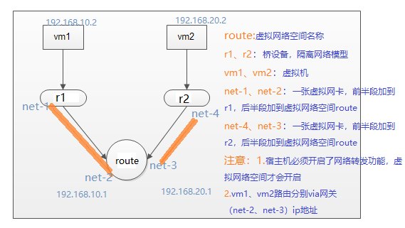
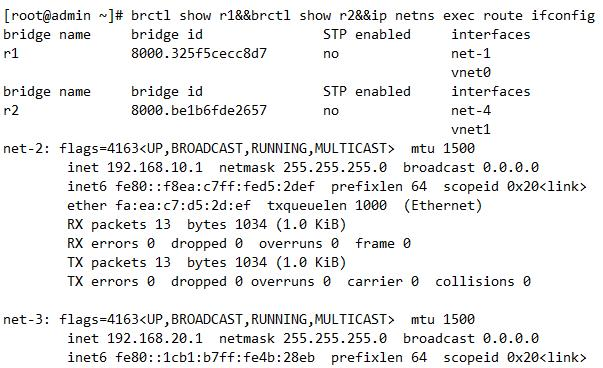
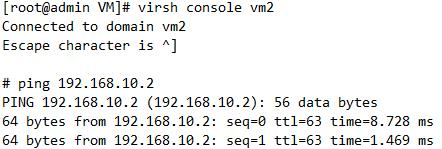

使用到的指令集：
qemu-img
virt-sysprep
virsh
dnsmasq
网络配置
[官方文档](https://wiki.libvirt.org/page/VirtualNetworking)
brctl命令
使用需要安装brctl-utils
brctl show：查看现有的虚拟桥设备
brctl addbr BR_NAME：添加虚拟网桥设备
brctl stp BRIDGE_NAME on：打开stp协议
brctl addif BRIDGE_NAME IFNAME：将虚拟网卡加入虚拟桥设备
1. 添加一对虚拟网卡
ip link add brin type veth peer name brout
2. 启动添加的网卡
ip link set brin up
ip link set brout up
以上方式是在命令行上配置的，是临时存在的，只要重启网络服务可能配置就不存在的
netns：网络名称空间
netns 可以创建一个完全隔离的新网络环境，这个环境包括一个独立的网卡空间，路由表，ARP表，ip地址表，iptables等。总之，与网络有关的组件都是独立的
Usage:
ip netns list 查看当前宿主机的所有名称空间
ip netns add NAME 添加一个网络名称空间
示例：ip netns add r1
ip netns delete NAME 删除一个网络名称空间
示例：ip netns delete r1
ip netns exec NAME cmd ... 执行网络名称空间的命令
示例：ip netns exec r1 ifconfig -a
ip link set VETH netns NETNS_NAME 将虚拟网卡VETH加入网络名称空间NETNS_NAME
ip link set dev net-out name eth0 netns ns1
ip link add type veth peer name net1-out
删除虚拟网络空间模式，所有和虚拟网络空间有关的虚拟网卡都会被删除。
示例：两个隔离环境虚拟机需要通信

yum install bridge-utils libvirt libvirt-client virt-install virt-viewer net-tools -y
1.创建网桥，并激活
brctl addbr r1
brctl addbr r2
ip link set up r1
ip link set up r2
2.创建虚拟机并连接网桥
virt-install --name vm1 --ram 512 --vcpus=1 --disk /root/VM/cirros-0.3.0-x86_64-disk-1.img --network bridge=r1,model=virtio --force --import --nographics --serial=pty --console=pty
virt-install --name vm2 --ram 512 --vcpus=1 --disk /root/VM/cirros-0.3.0-x86_64-disk-2.img --network bridge=r2,model=virtio --force --import --nographics --serial=pty --console=pty
3.创建虚拟网络空间
ip netns add route
4.创建一张虚拟网卡，虚拟网卡分为前半段和后半段，分别添加到网桥与虚拟网络空间
ip link add net-1 type veth peer name net-2
ip link add net-4 type veth peer name net-3
brctl addif r1 net-1
brctl addif r2 net-4
ip link set net-2 netns route
ip link set net-3 netns route
ip link set net-1 up&&ip link set net-4 up&&ip netns exec route ifconfig net-3 up&&ip netns exec route ifconfig net-4 up
5.配置vm1、vm2、net-2、net-3 ip地址
virsh console vm2 (vm1类似)
# ip addr add 192.168.20.2/24 dev eth0
# ip route add defaulit via 192.168.20.1
ip netns exec route ip addr add 192.168.10.1/24 dev net-2
ip netns exec route ip addr add 192.168.20.1/24 dev net-3

6.宿主机开启路由转发
sysctl -w net.ipv4.ip_forward=1
7.测试，

四种网络模型
1.桥接网络
1)CentOS 7创建物理桥，使用内核自带的桥接模块实现：
桥接口配置文件保留地址信息；复制物理网卡配置文件
TYPE=Bridge
Device=BRIDGE_NAME
物理网卡配置文件：
删除地址、掩码和网关等相关的配置，添加
BRIDGE=BRIDGE_NAME
重启网络服务即可：
2)创建xml文件
br.xml
1 | <network> |
2.nat网络
nat.xml
1 | <network> |
3.route
route.xml
1 | <network> |
4.isolate 隔离网络
isolate.xml
1 | <network> |
注意：网卡mac地址不能冲突
定义网络：
virsh define nat.xml
virsh start nat
dnsmasq
是一款小巧且方便地用于配置DNS服务器和DHCP服务器的工具，适用于小型网络，它提供了DNS解析功能和可选择的DHCP功能
dnsmasq listen-address=192.168.1.132,127.0.0.1 dhcp-range=192.168.1.50,192.168.1.150,48h dhcp-option=3,192.168.0.1
磁盘管理
映像文件的实现三种方式;
raw
cow
qcow2
qemu-img command [command options]
command
create 创建一个磁盘映像
-f [disk_format]
[disk_format]：qcow,qcow2,raw,host_device,host_cdrom,vmdk,vhdx,dmg...
[-o otions]
# qemu-img create -f qcow2 -o ? /VM/temp.qcow
size：
preallocation (off,metadata,falloc,full)
预分配模式,metadata：只写入磁盘元数据到磁盘，空间动态增长；full全量划分，空间全部占用
info 查看磁盘映像格式的信息
convert 磁盘映像的格式装换成其它格式
resize 改变磁盘映像的大小
check 检查磁盘映像文件的错误
示例：
转换磁盘格式
qemu-img convert -f raw -O qcow2 test01.img test01.qcow2
快照管理
virsh snapshot-create <domain>
1 创建快照：
virsh snapshot-create redis-1
virsh snapshot-create-as docker test
2 查看快照
#virsh snapshot-list redis-1
Name Creation Time State
------------------------------------------------------------
1546507229 2019-01-03 17:20:29 +0800 running
tst 2019-01-03 18:19:01 +0800 shutoff
ls /var/lib/libvirt/qemu/snapshot/redis-1/
virsh list --all
3 销毁关闭虚拟机
virsh shtudown docker
virsh detstroy docker
4 恢复虚拟机快照
virsh snapshot-revert redis-1 test
virsh snapshot-current <domain> [--name] [--security-info] [--snapshotname <string>]
恢复到最近一次快照
virsh snapshot-current redis-1 --snapshotname 1546507229
5 删除虚拟机快照
virsh snapshot-delete redis-1 tst
save和restore
可以在虚机开机状态下（内存）保存当前的虚机状态为一个文件
不推荐使用save和restore到生产中
在测试场景中，我们经常需要不断的将vm还原到某个起点，然后重新开始部署和测试。每次都删除/创建vm仍然很慢。
这个时候，可以使用save/restore方法。
virsh save --bypass-cache vm2 /opt/vm2_save --running
上面这个命令将vm2的当前状态保存到/opt/
--running参数表示下次restore回来的时候能够自动启动vm2,这个命令会导致vm2被关闭。
--bypass-cache加载时避免文件系统缓存
在save之前可以做一些基础工作。
还原：
virsh destroy vm2
virsh restore /opt/vm2_save --bypass-cache --running
必须先关闭虚拟机
磁盘热插拔扩展
qcow2格式的磁盘可以动态增加，创建的镜像类型后缀可以是qcow2，或者可以是img
虚拟机必须 running
1.创建一块磁盘
qemu-img create -f qcow2 -o preallocation=metadata /VM/vdb.img 1G
将空盘添加到虚拟机
virsh attach-disk redis-1 /root/VM/vdb.img vbd --cache none
查看虚拟机的磁盘列表
查看vm3的磁盘列表
2.拔掉磁盘
注意：使用virsh指令删除磁盘会直接强制将虚拟机中磁盘删除，如果磁盘已经挂载使用，要停止该磁盘的写操作，否则会造成数据丢失，拔掉的磁盘存储在kvm宿主机的vm实例的镜像目录中，需要使用可以再挂载使用
virsh detach-disk redis-1 vdb
在虚拟机中会自动识别其名称，命令是按字母顺序来的
网卡热插拔
虚拟机redis-1添加一个网卡到物理桥br0上
virsh attach-interface redis-1 bridge br0
注意：
撤销网卡，撤销网卡前先关闭网卡
撤销某一块网卡要指定该网卡的MAC，要不会撤销该网卡所在网桥上所有的网卡
查看虚拟机网卡
virsh domiflist redis-1
Interface Type Source Model MAC
---------------------------------------------------
vnet0 bridge br virtio 52:54:00:47:70:89
vnet1 bridge br0 rtl8139 52:54:00:fd:cd:cb
撤销网卡
virsh detach-interface vm4 bridge --mac 52:54:00:fd:cd:cb